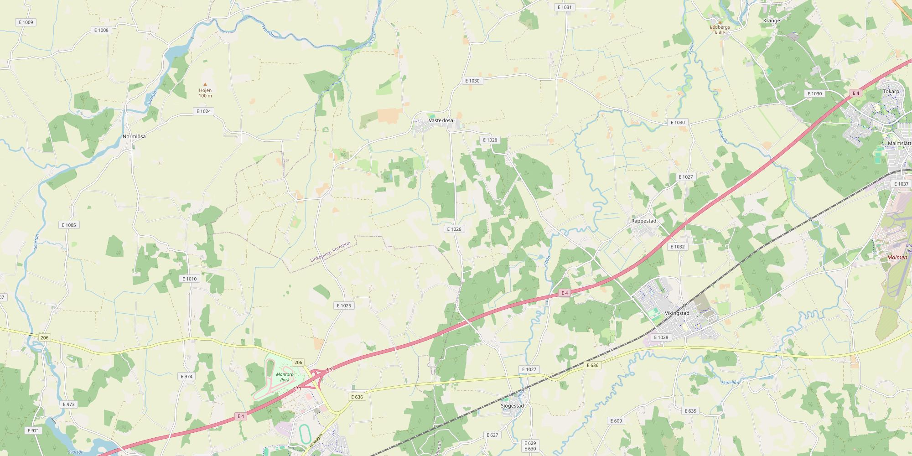
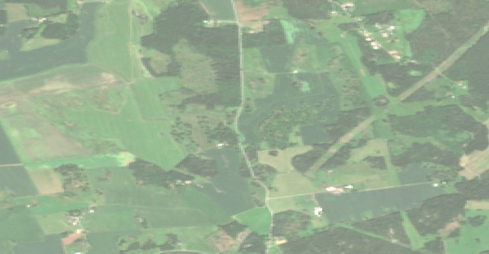
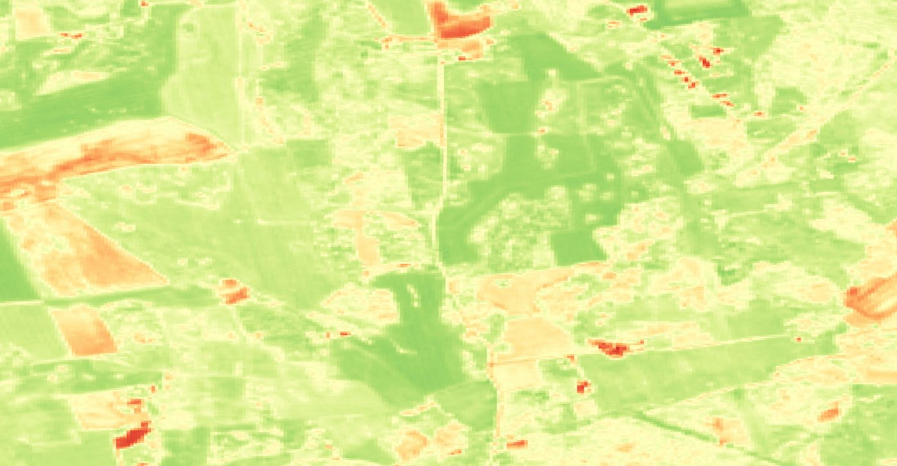

Modeling crop growth
Combining satellite data with model data, on one field in Östergötland that neither of us has ever walked across.
What we are going to build
A model of one specific field that runs on the weather that field actually got, and is checked against what the satellite actually saw.
Not a model of wheat in general. A model of this wheat, keeping pace with it, told when it is wrong.
flowchart LR F["🌾 The field
58.40°N 15.35°E"] S["🛰️ Sentinel-2
greenness, every 2–3 days"] W["🌡️ SMHI station 85240
temperature, rain, sunlight"] M["⚙️ CropTwin
Modelica model"] O["📊 State + forecast
leaf area, biomass, harvest"] F -->|observed| S F -->|drives| W S -->|corrects| M W -->|feeds| M M --> O O -.->|"disagreement = information"| S
Every input is public and open: European satellite imagery, Swedish government weather, Swedish parcel records.
Calibrated on 2019, 2020, 2022, 2025 and 2026, then run forward on the season happening now.
2025 does not fit, and the page says so rather than hiding it in an average.
The field itself
West of Linköping, between Vikingstad and Västerlösa, on the Östergötland plain.

What the satellite sees
Sentinel-2 passes over every two to three days at 10 m resolution, free, since 2015.
The left image is what your eye would see. The right one is the same pixels in near-infrared — the band that tells you whether the green is alive and how much of it there is.


Contains modified Copernicus Sentinel data 2026, accessed through the Microsoft Planetary Computer.
Climate data from SMHI
Sweden's meteorological institute publishes every station's full record, open, no key, back to 1944.
Station 85240, Linköping-Malmslätt, is 13 km from the field. Two endpoints matter: corrected-archive for the quality-controlled history and latest-months for everything up to yesterday.
(* daily Tmax (20) and Tmin (19) from SMHI, straight into an Association *) station = 85240; url = StringTemplate["https://opendata-download-metobs.smhi.se/api/version/1.0/\ parameter/`p`/station/`s`/period/latest-months/data.csv"]; smhi[p_] := Association @ Cases[ StringSplit[StringSplit[URLExecute[url[<|"p" -> p, "s" -> station|>], "Text"], "\n"], ";"], {_, _, d_ /; StringLength[d] == 10, v_, ___} :> DateObject[d] -> ToExpression[v]]; temperature = Merge[{smhi[20], smhi[19]}, Mean]; (* daily mean = (Tmax + Tmin)/2 *) rain = smhi[5]; (* 130 days to yesterday: {14.85, 14.95, 14., 12.7, 9.25} °C *) Values[Take[KeySort[temperature], -5]]
Sunlight comes from a second SMHI service, STRÅNG, which models radiation on a grid rather than measuring it at a station — so you can ask it for the field's own coordinates. Parameter 120 is photosynthetically active radiation, the half of sunlight a plant can actually use.
The bug that hid in this data for weeks
STRÅNG returns -999 for a missing day, so the loader dropped anything failing v > 0. Correct for radiation. Applied to temperature, it silently deleted every frost day of every winter — 26 to 65 days a season — and the gap-filler then drew a smooth line at +2 °C across a −10 °C cold snap. No day was missing afterwards, so nothing flagged it. It fed phantom growing degree-days into the model all winter long.
Four terms, and what they actually mean
Everything that follows is built from these.
NDVI — why infrared tells you about chlorophyll
A leaf absorbs red light to run photosynthesis and reflects near-infrared because of its internal cell structure. Dead or absent vegetation does neither. The contrast between the two bands is the measurement.
↔ swipe to see the whole diagram
Square metres of leaf over each square metre of ground. Winter wheat peaks near 6 — six layers of leaf. Above about 4 the canopy already catches nearly all the light, so more leaf buys very little.
A plant has no calendar. It adds up warmth: each day contributes its mean temperature above 0 °C. Flowering fires at a fixed total — here 1800 °C·d — which is why a warm autumn brings harvest forward.
Grams of dry matter made per megajoule of light the canopy intercepts. For wheat roughly 3. This single number turns sunlight into biomass.
How high the sun sits at the satellite's overpass. At 58°N it drops below 25° in early October — and that turns out to matter more than anything else on this page.
How a cereal crop actually grows
Winter wheat is sown in autumn, survives the winter as a small plant, and does most of its growing in a five-week burst in spring.
flowchart TD
subgraph drive[" what drives each step "]
direction LR
T["🌡️ warmth"]:::d
L["☀️ light"]:::d
R["💧 water"]:::d
end
A["Sowing · late September
farmer's decision"]
B["Emergence · ~10 days later
seed reserve only, no leaves yet"]
C["Tillering · October–November
side shoots, canopy to LAI ~1"]
D["Winter · December–February
near standstill, clock barely ticks"]
E["Stem extension · April–May
the fast phase, LAI 1 → 6"]
F["Flowering · mid-June · 1800 °C·d
leaf growth stops"]
G["Grain fill · late June–July
canopy dies back, sugar moves to grain"]
H["Harvest · August"]
A --> B --> C --> D --> E --> F --> G --> H
T -.-> B
T -.-> D
L -.-> E
R -.-> G
classDef d fill:#dfebe2,stroke:#2f6d46,color:#16211b;
The one loop that matters
More leaf catches more light → more light makes more sugar → more sugar builds more leaf. That reinforcing loop is what makes the spring curve so steep. It is stopped by one thing: a canopy can never intercept more than 100% of the light falling on it. Everything else in the model is detail on top of those two sentences.
Built as stocks and flows
System dynamics, in Modelica, in Wolfram System Modeler — using the Business Simulation Library.
A stock is something that accumulates: water in the soil, green leaf, dry matter, degree-days. A flow is a rate that fills or drains it. Draw those and the equations come with them.

soilWater), rain flowing in, evapotranspiration and drainage flowing out, and clouds marking the model boundary. Read it left to right and you have read the water balance.
The canopy publishes leaf area; the radiation block reads it and returns intercepted light. The engine of spring growth.
Beer's law. Intercepted fraction approaches one and the reinforcing loop starves. This is what stops LAI running to infinity.
Present, and almost entirely dormant in these Swedish seasons: ~600 mm of rain against a 450–500 mm need.
Five seasons, checked against the archive
The model gets the weather. The satellite gets the truth. Nothing in between is fitted except the sowing date and one flowering threshold.

Modelled canopy against every clear Sentinel-2 reading
Green line is the model. Filled dots are satellite observations with the sun at least 25° above the horizon. Hollow dots are low-sun readings, excluded — and notice they sit above the model in every single season.
↔ swipe to compare all five seasons
| Season | Emergence | RMSE | Peak LAI | Dry matter |
|---|
Screen by sun angle, not by date
Low sun deepens the canopy's own shadows, and red reflectance falls faster than infrared — so NDVI rises as the sun drops. In October 2018 the field read 0.55 at 23° and 0.80 at 12°, which would mean a canopy doubling its leaf area through November at 5 °C. No crop does that. Fitting those points dragged the calibration off the end of its own parameter range. Screening on solar elevation instead of on date fixed it and cut RMSE from 0.128 to 0.076.
Where it fails: 2025
Clear-sun NDVI goes from 0.23 on 20 September to 0.51 nine days later — faster than the model can green at any sowing date. The field is registered winter wheat, so it is not a crop mix-up. The fitted emergence for that season is a whole-season compromise, not a measurement, and it is reported here as a failure rather than averaged away.
The twin, live on a desktop
One HTML file, one data file, no server and no account. Open it and it tells you what the field is doing today.
The layout is deliberately two-speed: an overview you can read in five seconds, and a details section you open only when the overview says something surprising.
Overview — what you see first
↔ swipe to follow the whole crop year
Left of the dashed line the model is driven by measured SMHI and STRÅNG data. Right of it, it is run five times — once with each completed season's real weather — and the band is the spread between them.
How it stays alive: a notebook, a databin, a page
The simulations need System Modeler, so they run on one computer, once a day, from a scheduled notebook. That run pushes one entry per day into a Wolfram Databin — the day's measured weather, any new satellite scene, and the model's state and forecast. The dashboard is a single HTML file that reads the bin over the public Data Drop API when it opens. No server, no deployment: the notebook is the twin's heartbeat, the bin is its memory, the page is its face, and the page can sit anywhere — a laptop, the Wolfram Cloud, a static host.
Details — what you open when the overview surprises you
Every satellite reading with its sun angle and whether it was used; the weather driving the run; the crop's clock against the flowering threshold; the five calibrated seasons; and a line for every number saying where it came from.
Do not average the weather — average the outcomes
The first forecast used a 30-year day-of-year mean and predicted 9.1 peak LAI and 21 t/ha, well above any real season. Averaging daily temperature before max(0, T) destroys the winter: the mean sits near zero through midwinter, so the model saw 2 °C·d where a real year delivers 100–250. Running five real years instead gives 5.4–6.7 and 15–18 t/ha. Same class of mistake as the frost bug — a nonlinearity applied in the wrong order.
Update it every day
One script. SMHI publishes yesterday's weather each morning; Sentinel-2 delivers a new look every two to three days.
(* update.wls — run once a day *) (* 1. weather to yesterday *) temperature = Merge[{smhi[20], smhi[19]}, Mean]; par = DeleteCases[strang[120], _?(# < 0 &)]; (* -999 = missing *) (* 2. any new clear scene over the field *) observations = Select[ndviOf /@ scenes, MemberQ[{4, 5}, #["scl"]] &]; (* 3. rebuild the driver table and re-simulate five analogue years *) Export["linkoping_2027.txt", table, "Table"]; runs = Association @ Table[h -> WSMSimulate["CropTwin.Ensemble.Analogue" <> ToString[h]], {h, {2019, 2020, 2022, 2025, 2026}}]; (* 4. hand the dashboard its new state *) Export["state.js", "window.CROPTWIN_STATE = " <> ExportString[state, "JSON"] <> ";", "Text"]
One more measured row, one fewer forecast row. The boundary in the chart moves right by a day.
A new NDVI reading, if the sky is clear and the sun is high enough to trust it.
Refit emergence once the autumn canopy is visible, and again when the season closes and the whole curve can be scored.
Everything used to build this
All of it free to read from, and none of it requiring a login.
| Piece | What it does | Cost |
|---|---|---|
| Wolfram System Modeler | Modelica simulation — the model itself | licensed |
| Business Simulation Library | Stock-and-flow components, v2.2.0 — the one thing not bundled with System Modeler; a free download | free, open |
| Wolfram Language | URLExecute for every API, calibration, the update script | licensed |
| SMHI metobs | Station weather, back to 1944 | free, no key |
| SMHI STRÅNG | Modelled radiation and PAR at any point | free, no key |
| Copernicus Sentinel-2 | 10 m imagery every 2–3 days | free |
| Microsoft Planetary Computer | STAC search and point reads without GDAL | free, no key |
| Jordbruksverket | Parcel register — which crop, which year | free |
The honest limitation
At 58°N the satellite is useless for roughly five months. The hard gap — zero clear pixels — is 64 days. Add the weeks either side where the sun sits too low to trust, and the twin is flying on weather data alone from early October to early March. The first clear image in spring is the exam, and it only comes once a year.